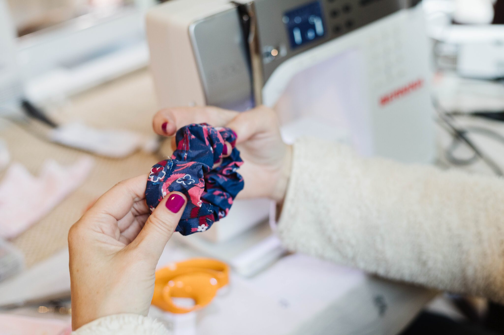

WeSpark Creative Retreats & Craft Events
WeSpark hosts creative retreats and craft events designed to help you slow down, try something new and meet like-minded people. Our events range from relaxed afternoon workshops to full weekend retreats in Wicklow. Expect hands-on activities like watercolour painting, sewing, collage and seasonal crafts, all done together around the table in a welcoming, supportive atmosphere. A big part of WeSpark is connection. You might arrive on your own, but you’ll be crafting, chatting and learning new skills alongside others who are there for the same reason: to create, unwind and step away from routine. No experience is needed, everything is beginner-friendly and all materials are provided. Upcoming events include: • Creative craft afternoons • Weekend creative retreats Come along, try a new craft and meet your next creative circle.
View on Google Maps →